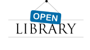

Political TV Ad Archive
The Political TV Ad Archive is a project that provides a searchable, viewable, and shareable online archive of 2016 political TV ads, married with fact-checking and reporting citizens can trust. In partnership with trusted journalism organizations, the archive provides a free service for journalists, civic organizations, academics and the general public to track these ads in context. The first phase of the project, covering key 2016 primary elections, was funded by a $200,000 grant from the Knight News Challenge, an initiative of the John S. and James L. Knight Foundation. The Challenge was a collaboration joined by the Rita Allen Foundation, the Democracy Fund, and the Hewlett Foundation. The Democracy Fund also granted $49,634 to support joint trainings of journalists in key primary states in partnership with the American Press Institute. Additional support came from personal donations from Christopher Buck ($25,000) and Craig Newmark ($20,000). Project staff are gathering lessons learned, which will inform planning and fundraising for the second phase of the project: tracking political ads in key 2016 general election battleground states.
Building Libraries Together
The Internet Archive is one of the world's largest public digital libraries, with an extensive collection of human culture: 2 million books, 430 billion Web pages, 3 million hours of television and more. However, the archive's users upload only a small percentage of these materials and to preserve the world's knowledge the public should be encouraged to contribute. The archive is embarking on a project to make the archive.org site more community-driven by improving the tools that allow people to upload, describe and organize items. With these new tools, the Internet Archive hopes to democratize knowledge by giving global communities the ability to save, manage and share their cultural treasures for free. What Wikimedia did for encyclopedia articles, the Internet Archive hopes to do for collections of media: give people the tools to build library collections together and make them accessible to everyone. The project is supported by a $600,000 grant from the John S. and James L. Knight Foundation.
Open Library
OpenLibrary.org is comprised of two great parts! A free, digital lending library of over 2 million eBooks that can be read in a browser or downloaded for reading off-line. And, a unique project to build one web page for every book ever published. Over 20 million books already have a page on OpenLibrary.org
Please participate in the building of this site. It is an Open project - the software is open, the data is open, the documentation is open, and the site is open. Anyone can participate in this project, whether you're a librarian who wants to add records of digitized books to her local catalog, or you're a lover of books who wants to make sure his favorites are well represented, or you just want to find a good book to read for free, or you're a programmer who wants to build something new on top of this data.
Scanning Services
Internet Archive can digitize your collections and provide open and free access, long-term storage, unlimited downloads, and lifetime file management. Internet Archive has scanned more than 600 million pages with partners ranging from the Library of Congress and the Smithsonian to New York Public Library, Harvard, and MIT. Contact info@archive.org if you are interested in having your collection digitized.
Software Archive
The Software Archive is designed to preserve and provide access to all kinds of rare or difficult to find, legally downloadable software titles and background information on those titles.
The collection includes a broad range of software related materials including shareware, freeware, video news releases about software titles, speed runs of actual software game play, previews and promos for software games, high-score and skill replays of various game genres, and the art of filmmaking with real-time computer game engines.
Wayback Machine
Internet Archive's web archive, launched in 1996, contains over 2 petabytes of data compressed, or 150+ billion web captures, including content from every top-level domain, 200+ million web sites, and over 40 languages.
Archive-It
First deployed in 2006, Archive-It is a subscription web archiving service that helps organizations to harvest, build, and preserve collections of digital content. Through the user friendly web application Archive-It partners can collect, catalog, and manage their collections of archived content with 24/7 access and full text search available for their use as well as their patrons. Content is hosted and stored at the Internet Archive data centers.
Over 240 partner organizations in 46 U.S. states and 15 countries currently use Archive-It, including state archives and libraries, university libraries, federal institutions, museums, NGOs and public libraries.
Offline Archive
The Internet Archive's central mission is establishing "Universal Access to All Knowledge," and we want to make sure that our library of millions of books, journals, audio files, and video recordings is available to anyone. Since lack of an internet connection is a major obstacle to that goal, we created the Offline Archive project -that works to make online collections available regardless of internet availability.
BookServer
The BookServer project provides an open architecture for vending, lending and distributing books over the Internet. Built on open standards, the BookServer model allows a wide network of publishers, booksellers, libraries, and other parties to make their catalogs of books available directly to readers through their laptops, phones, netbooks, or dedicated reading devices.
Open Content Alliance
The Open Content Alliance (OCA) was a collaborative effort of a group of cultural, technology, nonprofit, and governmental organizations from around the world that helps build a permanent archive of multilingual digitized text and multimedia material. An archive of contributed material is available on the Internet Archive site and through Yahoo! and other search engines and sites.
Education
Open Education Resources library containing hundreds of free courses, video lectures, and supplemental materials from universities in the United States and China.
Bookmobile
The Bookmobile is a mobile digital library capable of downloading public domain books from the Internet via satellite and printing them anytime, anywhere, for anyone. The Bookmobile has travelled across the United States, and versions of it have been built and used in Egypt and Uganda.
Open Community Networks
Internet Archive's Community Networking project provides free, high speed wired and wireless Internet to residents of San Francisco. The project has evolved greatly since its inception in 1997, and currently works with the City and County of San Francisco to provide free, high speed internet to low income San Francisco residents. We are intersted in providing the same to other communities. If you are interested, please contact info@archive.org
Petabox
The PetaBox was custom-designed by Internet Archive staff to safely store and process one petabyte (a million gigabytes) of information. The goal was to make a storage system that was low power, high density, easy to scale and maintain, and low cost. PetaBoxes are now in use at major academic institutions and government agencies. The Internet Archive houses more than 10 petabytes of PetaBox storage technology and is expanding steadily.
301Works.org
301Works.org is an independent service for archiving URL mappings. The goal of the service is to provide protection for every day users of short URL services by providing transparency and permanence of their mappings.